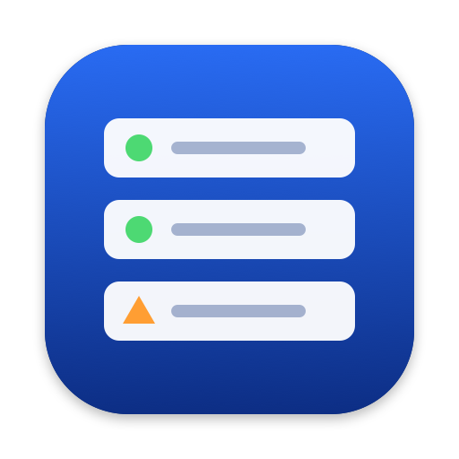

LD Manager
Know what runs on your Mac.
Fix what doesn’t.
The Doctor
Lossless editing
ldm CLI
Every LaunchAgent and LaunchDaemon, every layer of its status, exit codes in plain words. Diff and backup on every save.
macOS 26+
native SwiftUI
free & open source